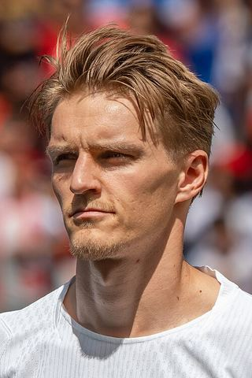

Ezzcoins › Player pages › Martin Ødegaard (FUT Champions)
87
CM

Ødegaard
PAC76
SHO80
PAS89
DRI88
DEF67
PHY68
PlayStyles
Incisive PassPinged PassInventiveTechnicalFirst TouchFUT Champions
Martin Ødegaard
87 CM · Arsenal · Premier League ·  Norway
Norway
Reward card · not tradeable
86Meta rating · CM −1 vs overall
CM86CAM86
PAC76
SHO80
PAS89
DRI88
DEF67
PHY68
Chemistry style
Turn on JavaScript to see this card with each chemistry style.
- Card
- FUT Champions
- Added
- 2 Oct 2026
- Position
- CM (also CAM)
- Club
- Arsenal
- League
- Premier League
- Nation
- Norway
- Skill moves
- 5★
- Weak foot
- 2★
- PlayStyles+
- Incisive Pass+
- PlayStyles
- Incisive Pass, Pinged Pass, Inventive, Technical, First Touch
- Base card
- 86 CM ›
Meta rating: Ezzcoins' own estimate of how well this card plays in game, worked out from its stats for each position it can play, its skill moves, weak foot and PlayStyle+. An average card scores about its overall rating; higher means it plays above its rating.
Watch on Ezzcoins